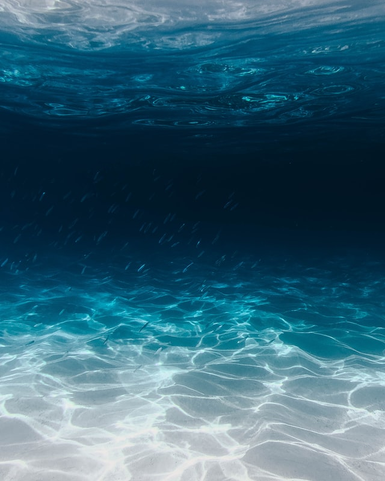
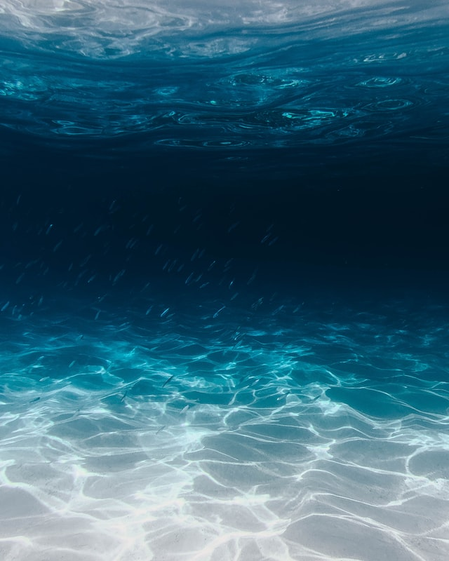

They Predate the Dinosaurs by Hundreds of Millions of Years
Jellyfish have no bones, so fossils are hard to come by. Nevertheless, scientists have evidence these creatures have been bobbing along in the world's oceans for at least 500 million years. In fact, it's likely the jellyfish lineage goes back even further, possibly 700 million years. That's roughly three times the age of the first dinosaurs.
They Are 98% Water, Without a Brain or a Heart
Jellyfish seem to blend in with their environment, undulating gently with the ocean's currents, and with good reason: Their bodies are made up of as much as 98% water. When they wash ashore, they can disappear after just a few hours as their bodies evaporate into the air. They have a rudimentary nervous system, a loose network of nerves located in the epidermis called a "nerve net," but no brain. They also don't have a heart; their gelatinous bodies are so thin they can be oxygenated solely by diffusion.
But Some Have Eyes
Despite their simple body design, some jellyfish have the ability to see. In fact, for a few species their vision can be surprisingly complex. For instance, the box jellyfish has 24 "eyes," two of which are capable of seeing in color. It's also believed this animal's complicated array of visual sensors makes it one of the few creatures in the world to have a full 360-degree view of its environment.
Some Might Be Immortal
At least one species of jellyfish, Turritopsis nutricula, may be able to cheat death. When threatened, this species is capable of undergoing "cellular transdifferentiation," a process whereby the organism's cells essentially become new again. In other words, this jellyfish has a built-in fountain of youth. It's theoretically immortal!
They Poop Where They Eat
It might not sound very appetizing, but jellyfish have no need for separate orifices for eating and pooping. They have one orifice that does the job of both the mouth and the anus. Yuck! But that's also beautiful in a minimalist sort of way.
 

{kind=link}